介绍
webpack 是基于模块化的打包（构建）工具，它把一切视为模块（图片,css 等）
它通过一个开发时态的入口模块为起点，分析出所有的依赖关系，然后经过一系列的过程（压缩、合并），最终生成运行时态的文件。
webpack 的特点：
- 为前端工程化而生：webpack 致力于解决前端工程化，特别是浏览器端工程化中遇到的问题，让开发者集中注意力编写业务代码，而把工程化过程中的问题全部交给 webpack 来处理
- 简单易用：支持零配置，可以不用写任何一行额外的代码就使用 webpack
- 强大的生态：webpack 是非常灵活、可以扩展的，webpack 本身的功能并不多，但它提供了一些可以扩展其功能的机制，使得一些第三方库可以融于到 webpack 中
- 基于 nodejs：由于 webpack 在构建的过程中需要读取文件，因此它是运行在 node 环境中的
- 基于模块化：webpack 在构建过程中要分析依赖关系，方式是通过模块化导入语句进行分析的，它支持各种模块化标准，包括但不限于 CommonJS、ES6 Module
- 专注于处理模块化的项目，能做到开箱即用，一步到位
- 可通过
plugin扩展，完整好用又不失灵活 - 使用场景不局限于
web开发 - 社区庞大活跃，经常引入紧跟时代发展的新特性，能为大多数场景找到已有的开源扩展
- 可以将一些非 JS 代码也视为模块，这样可以对 css、图片等资源进行更加细粒度的划分
- 非常适合开发单页应用
单页应用是前端用户体验最好的 web 应用
所谓单页应用，是指只有一个 html 页面，页面中没有任何内容，所有的内容均靠 js 生成
要优雅的实现单页应用，最好依托于前端框架，比如 vue、react
安装与使用
webpack 与 webpack-cli
- webpack：核心包，包含了 webpack 构建过程中要用到的所有 api
- webpack-cli：提供一个简单的 cli 命令，它调用了 webpack 核心包的 api，来完成构建过程
其实他们之间就是 vite 与 create-vite
webpack-cli 内部还是调用了 webpack，他更像是一层封装，提供了许多常用的接口，不需要用户直接去调用 webpack
是 webpack-cli 提供了 webpack 这个命令使我们可以在控制台使用 webpack xxx
使用
这个命令其实是 webpack-cli 提供的
webpack
默认情况下，webpack 会以./src/index.js作为入口文件分析依赖关系，打包到./dist/main.js文件中
通过–mode 选项可以控制 webpack 的打包结果的运行环境
模块化兼容性
由于 webpack 同时支持 CommonJS 和 ES6 module，因此需要理解它们互操作时 webpack 是如何处理的
同模块化标准
如果导出和导入使用的是同一种模块化标准，打包后的效果和之前学习的模块化没有任何差异
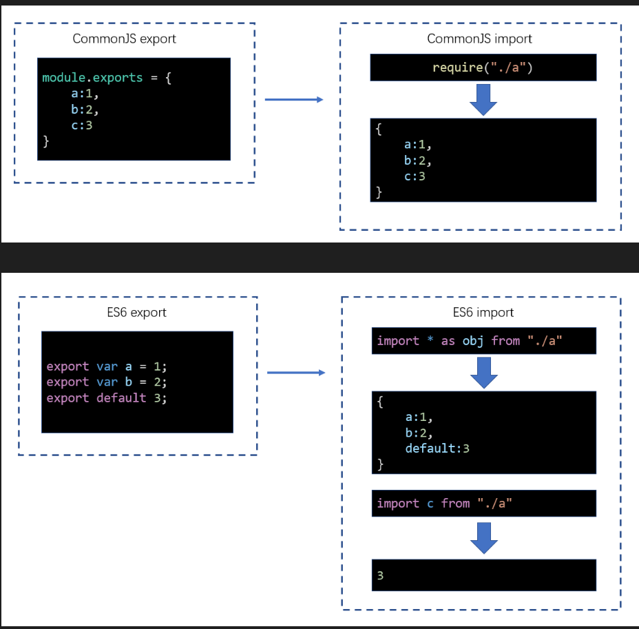
不同模块化标准
不同的模块化标准，webpack 按照如下的方式处理
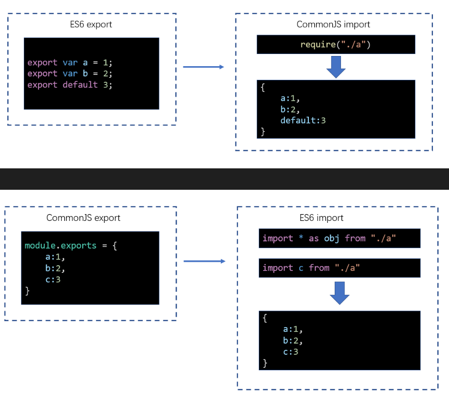
编译结果分析（重要）
webpack 打包后的结果就是一个普普通通的 js 代码，不会存在任何的模块化
分析如何通过一个入口模块打包一个 bundle（bundle 内部是一个立即执行函数，不会污染全局变量）
结果分析
用这样的方式去运行模块代码不会形成全局污染（因为都在函数作用域内执行）
//合并两个模块
// ./src/a.js
// ./src/index.js
(function (modules) {
var moduleExports = {}; //用于缓存模块的导出结果
//require函数相当于是运行一个模块，得到模块导出结果
function __webpack_require(moduleId) {
//moduleId就是模块的路径
if (moduleExports[moduleId]) {
//检查是否有缓存
return moduleExports[moduleId];
}
var func = modules[moduleId]; //得到该模块对应的函数
var module = {
exports: {},
};
func(module, module.exports, __webpack_require); //运行模块
var result = module.exports; //得到模块导出的结果
moduleExports[moduleId] = result; //缓存起来
return result;
}
//执行入口模块
return __webpack_require("./src/index.js"); //require函数相当于是运行一个模块，得到模块导出结果
})({
//该对象保存了所有的模块，以及模块对应的代码
"./src/a.js": function (module, exports) {
eval(
'console.log("module a")\nmodule.exports = "a";\n //# sourceURL=webpack:///./src/a.js'
);
},
"./src/index.js": function (module, exports, __webpack_require) {
eval(
'console.log("index module")\nvar a = __webpack_require("./src/a.js")\na.abc();\nconsole.log(a)\n //# sourceURL=webpack:///./src/index.js'
);
},
});
//立即执行函数，不形成任何的变量污染
//不使用任何变量，直接传入对象，不形成变量污染
webpack 做的事情
1.统一路径命名
2.把每一个模块放入函数中执行，并提供函数参数 module, exports, __webpack_require 等
3.执行的代码会放入 eval 环境（为了方便调试）
eval 里面的代码，浏览器会放到另外一个环境里去执行，浏览器的表象就是(vmXXXX)
js 执行引擎的虚拟机编号
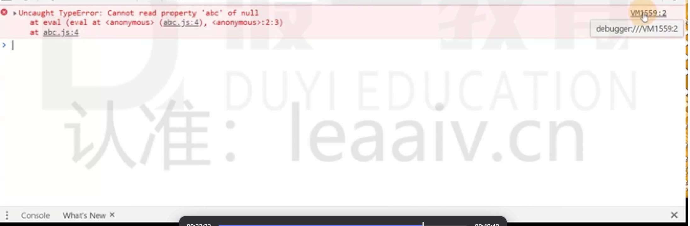
eval 环境执行的代码可以写注释
eval("var d = null;\nd.abc();//# sourceURL=./src/a.js");
编译过程（重要）
webpack 的作用是将源代码编译（构建、打包）成最终代码
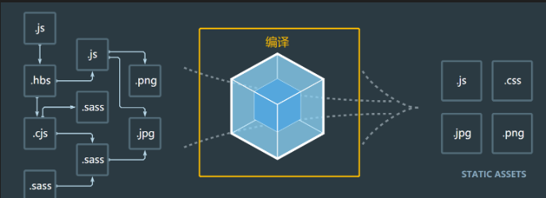
整个过程大致分为三个步骤
- 初始化
- 编译
- 输出
初始化
此阶段，webpack 会将CLI 参数、配置文件、默认配置进行融合，形成一个最终的配置对象。
对配置的处理过程是依托一个第三方库yargs完成的
此阶段相对比较简单，主要是为接下来的编译阶段做必要的准备
目前，可以简单的理解为，初始化阶段主要用于产生一个最终的配置
编译
- 创建 chunk
chunk 是 webpack 在内部构建过程中的一个概念，译为块，它表示通过某个入口找到的所有依赖的统称。
根据入口模块（默认为./src/index.js）创建一个 chunk
比如入口模块是 index.js，index.js 依赖 a.js，b.js 又依赖 c.js，那 index.js，a.js,b.js 这三个文件统称为一个 chunk.
单入口就只有一个 chunk，多入口就有多个 chunk
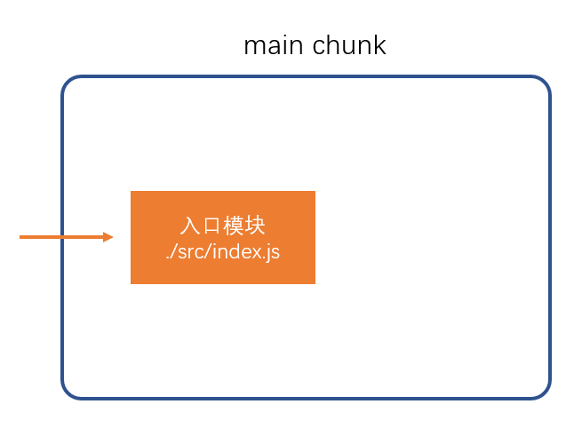
每个 chunk 都有至少两个属性：
- name：默认为 main
- id：唯一编号，开发环境和 name 相同，生产环境是一个数字，从 0 开始
- 构建所有依赖模块
先从 chunk 模块记录中去找是否已经分析记录这个模块，如果没有，读取文件，转化为 AST 抽象语法树，树形结构遍历，找出依赖关系，记录依赖(保存成一个数组，每一项是一个完整的依赖路径)，替换 require 变成 webpack_require，替换路径为完整路径(编译结果的方式，这些都是在内存中的改动，不会变动原文件)，把转换后的代码存入表格之中，最后再把记录依赖的数组拿出来循环，最终形成一个 chunk 表格
因为 webpack 支持多种模块化, 他一开始必须要统一模块化代码, 所以意味着他需要将所有的依赖全部读一遍（webpack 的打包和热更新的速度是慢的）
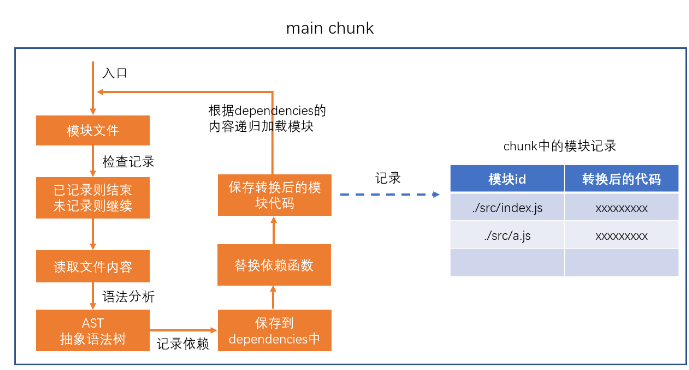
每一个模块可以认为是一个文件，里面记录了转换后的代码
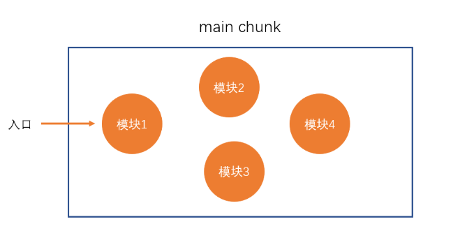
- 产生 chunk assets
在第二步完成后，chunk 中会产生一个模块列表，列表中包含了模块 id和模块转换后的代码
我们可以把 chunk 中的模块记录放入一个模板之中去进行打包，类似如此
转化完以后文件名就是”./src/a.js”
文件内容就是以下代码，合并后的代码文件
//把两个文件代码进行合并
// ./src/a.js
// ./src/index.js
(function (modules) {
var moduleExports = {};
function __webpack_require(moduleId) {
if (moduleExports[moduleId]) {
//检查是否有缓存
return moduleExports[moduleId];
}
var func = modules[moduleId];
var module = {
exports: {},
};
func(module, module.exports, __webpack_require);
var result = module.exports;
moduleExports[moduleId] = result;
return result;
}
return __webpack_require("./src/index.js");
})({
//这就是我们转化后chunk表格，把他放进来执行
"./src/a.js": function (module, exports) {
eval(
'console.log("module a")\nmodule.exports = "a";\n //# sourceURL=webpack:///./src/a.js'
);
},
"./src/index.js": function (module, exports, __webpack_require) {
eval(
'console.log("index module")\nvar a = __webpack_require("./src/a.js")\na.abc();\nconsole.log(a)\n //# sourceURL=webpack:///./src/index.js'
);
},
});
接下来，webpack 会根据配置为 chunk 生成一个资源列表，即chunk assets，资源列表可以理解为是生成到最终文件的文件名和文件内容
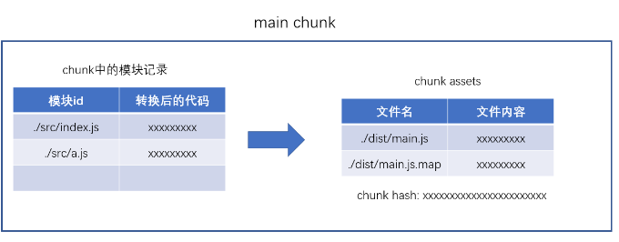
这一步还没有生成文件，只是将 chunk 表格转化为 chunk assets 表格（每一个资源可以认为是一个 bundle）,chunk assets 里面的文件内容就是进行过打包以后的实际内容，通过上述的描述，形成文件内容，最后会对所有文件联合起来的内容做一次 hash
chunk assets 可能有 js 文件，也有可能有.js.map 文件
chunk hash 是根据所有 chunk assets 的内容生成的一个 hash 字符串
hash：一种算法，具体有很多分类，特点是将一个任意长度的字符串转换为一个固定长度的字符串，而且可以保证原始内容不变，产生的 hash 字符串就不变
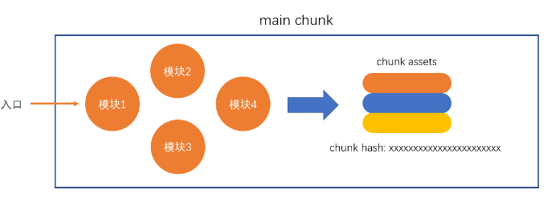

- 合并 chunk assets
将多个 chunk 的 assets 合并到一起，并产生一个总的 hash
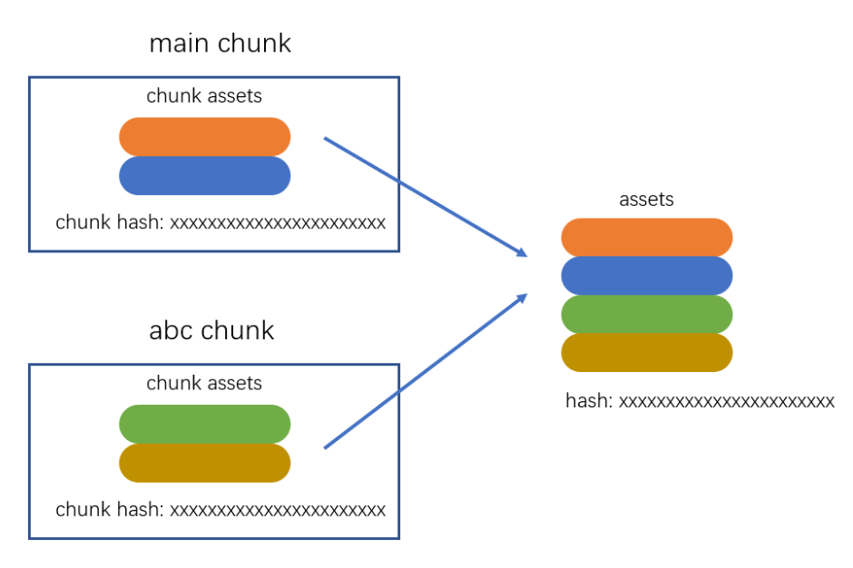

输出
此步骤非常简单，webpack 将利用 node 中的 fs 模块（文件处理模块），根据编译产生的总的 assets，生成相应的文件。
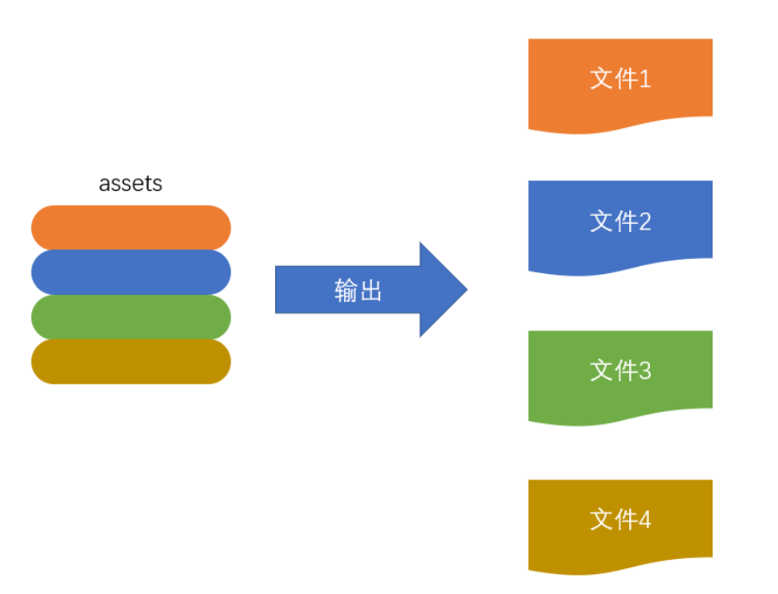
注意：在输出之前，上面的步骤都是在内存中完成的，没有生成任何的文件，这一步才是在输出生成文件
总过程
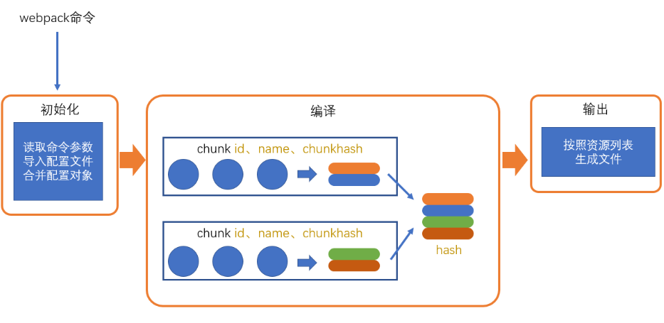
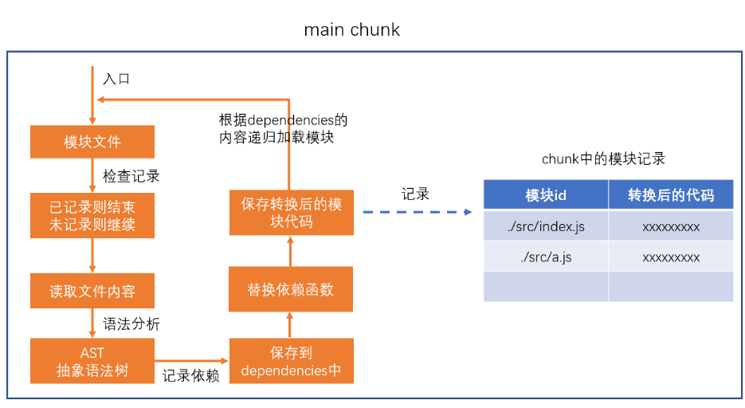
 涉及术语
涉及术语
- module：模块，分割的代码单元，webpack 中的模块可以是任何内容的文件，不仅限于 JS
- chunk：webpack 内部构建模块的块，一个 chunk 中包含多个模块，这些模块是从入口模块通过依赖分析得来的
- bundle：chunk 构建好模块后会生成 chunk 的资源清单，清单中的每一项就是一个 bundle，可以认为 bundle 就是最终生成的文件
- hash：最终的资源清单所有内容联合生成的 hash 值
- chunkhash：chunk 生成的资源清单内容联合生成的 hash 值
- chunkname：chunk 的名称，如果没有配置则使用 main
- id：通常指 chunk 的唯一编号，如果在开发环境下构建，和 chunkname 相同；如果是生产环境下构建，则使用一个从 0 开始的数字进行编号
配置文件
webpack 提供的 cli 支持很多的参数，例如--mode，但更多的时候，我们会使用更加灵活的配置文件来控制 webpack 的行为
默认情况下，webpack 会读取webpack.config.js文件作为配置文件，但也可以通过 CLI 参数--config来指定某个配置文件
配置文件中通过 CommonJS 模块导出一个对象，对象中的各种属性对应不同的 webpack 配置
注意：配置文件中的代码，必须是有效的 node 代码
当命令行参数与配置文件中的配置出现冲突时，以命令行参数为准。
入口与出口（entry，output）
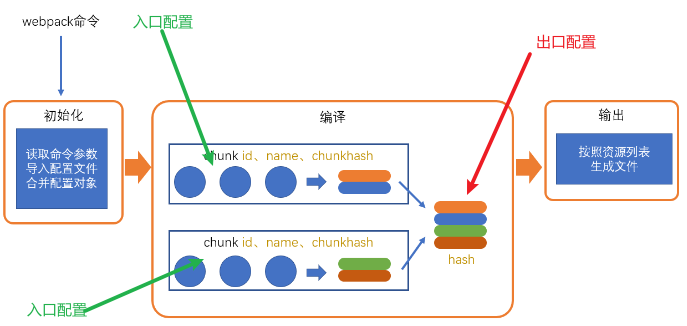
注意 chunk 打包后，可能会生成两个文件
1.一定会生成一个文件是合并模块后的 js 代码文件**(output 的 filename 配置的是这个文件)**
2.对应的 map 文件
Entry（入口）
入口配置的是 chunk（就是通过入口的配置来告诉我有几个 chunk）
默认
//默认配置是这样写的，两者等价，也等于不写
module.exports = {
entry: {
//属性名：chunk的名称， 属性值：入口模块（启动模块）
main: "./src/index.js",
},
};
module.exports = {
entry: "./src/index.js",
};
多入口(相当于多个 chunk 并行去找依赖配置，生成打包的 bundle)
注意，由于是多个 chunk，一定会生成多个 bundle，那么 output 出口的 filename 一定要使用动态配置
module.exports = {
entry: {
main: "./src/index.js",
a: "./src/a.js",
},
};
可以配置一个入口(chunk)下的多个文件（多个入口模块）
就算一个 chunk 下配置多个启动模块，但最终生成的 bundle 文件还是只有一个
module.exports = {
entry: {
main: "./src/index.js",
a: ["./src/a.js", "./src/index.js"], //启动模块有两个
},
};
打包之前的代码中他需要先去运行 a.js 再运行 index.js(运行的顺序等于配置数组的顺序)
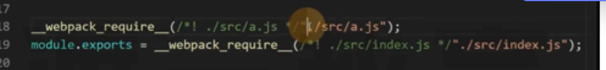
Output（出口）
这里的出口是针对资源列表的文件名或路径的配置（编译结果文件位置和名字）
module.exports = {
output: {
//必须配置一个绝对路径，表示资源放置的文件夹，默认是./dist
path: path.resolve(__dirname, "target"),
//配置的合并的js文件的规则
filename: "[id].[chunkhash:5].js",
},
};
配置的合并的 js 文件的规则
:数字表示截取
[]可以用来配置规则（可填以下值）
● name：chunkname
● hash: 总的资源 hash，通常用于解决缓存问题
● chunkhash: 使用 chunkhash
● contenthash: 表示单个文件的 hash
● id: 使用 chunkid，不推荐(因为使用 id，开发模式 id 是名字，生产模式是数字)
publicPath（解决路径问题）
在使用 file-loader 或 url-loader 时，可能会遇到一个非常有趣的问题
比如，通过 webpack 打包的目录结构如下：
dist
|—— img
|—— a.png #file-loader生成的文件
|—— scripts
|—— main.js #export default "img/a.png"
|—— html
|—— index.html #<script src="../scripts/main.js" ></script>
这种问题发生的根本原因：模块中的路径来自于某个 loader 或 plugin，当产生路径时，loader 或 plugin 只有相对于 dist 目录的路径，并不知道该路径将在哪个资源中使用，从而无法确定最终正确的路径
面对这种情况，需要依靠 webpack 的配置 publicPath 解决
publicPath 默认是没有斜杠的
当不配置 publicPath 的时候是相对路径
假如我们的页面地址是 localhost:8000/html/index.html,然后里面的资源是相对路径img/xxx.png
所以最后生成的路径就是 localhost:8000/html/img/xxx.png
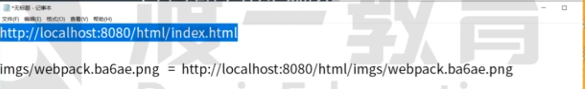
当配置 publicPath: “/“之后就变成了绝对路径
当配置以后/表示的意思资源的路径是/img/xxx.png
然后协议，主机名，端口号照抄进行拼接最后就形成了 localhost:8000/img/xxx.png
在 output 里面配置 publicPath 是会对所有的 loader 和 plugin 生效的，任何的 loader 和 plugin 都有可能去读这个配置修改资源路径；当然有些 loader 自己本身会有 publicPath 这个配置，那就只会影响自己生成出来的路径
原理：当配置了 output 的 publicPath 之后，打包后的 webpack 代码会有这么一句webpack_require.p = “xxxxx”
任何人需要都可以使用这个配置，webpack 本身只是存了一个字符串
const { CleanWebpackPlugin } = require("clean-webpack-plugin");
const HtmlWebpackPlugin = require("html-webpack-plugin");
module.exports = {
output: {
filename: "scripts/[name].[chunkhash:5].js",
publicPath: "/",
},
module: {
rules: [
{
test: /\.(png)|(gif)|(jpg)$/,
use: [
{
loader: "file-loader",
options: {
name: "imgs/[name].[hash:5].[ext]",
publicPath: "../",
},
},
],
},
],
},
};
Loader（module）
loader 本质上是一个函数，它的作用是将某个源码字符串转换成另一个源码字符串返回
loader 函数的将在模块解析的过程中被调用，以得到最终的源码。
全流程：
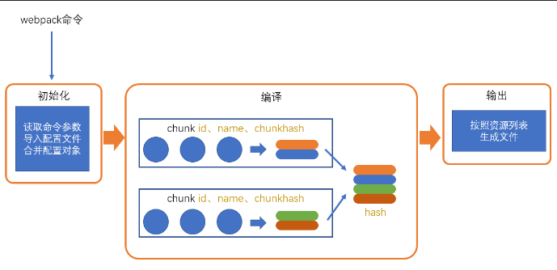
chunk 中解析模块的流程：
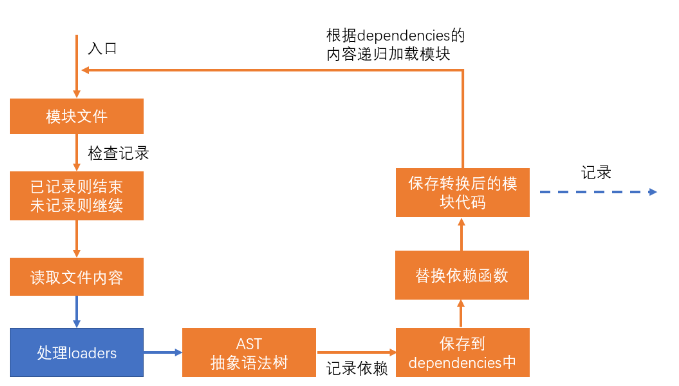
处理 loaders 流程：
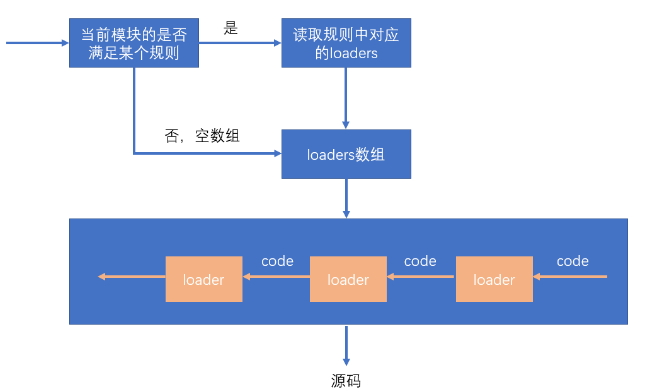
1.多个规则，一个规则中又有多个 loader，那么加载顺序是从后向前(先加载 loader4,再加载 loader3 …..)
2.loader 内只能写 commonjs,因为要参与运行
3.从入口模块匹配到规则以后，如果里面还有 require，还需要递归循环 loader 去匹配规则
module.exports = {
mode: "development",
module: {
rules: [
{
test: /index\.js$/, //正则表达式，匹配模块的路径
use: ["./loaders/loader1", "./loaders/loader2"], //匹配到了之后，使用哪些加载器
}, //规则1
{
test: /\.js$/, //正则表达式，匹配模块的路径
use: ["./loaders/loader3", "./loaders/loader4"], //匹配到了之后，使用哪些加载器
}, //规则2
], //模块的匹配规则
},
};
在 rules 里面每一个 loader 里可以写 options 参数，loader 加载器可以获取到
//配置文件
module.exports = {
module: { //针对模块的配置，目前版本只有两个配置，rules、noParse
rules: [ //模块匹配规则，可以存在多个规则
{ //每个规则是一个对象
test: /\.js$/, //匹配的模块正则
use: [ //匹配到后应用的规则模块
{ //其中一个规则
loader: "模块路径", //loader模块的路径，该字符串会被放置到require中
options: { //向对应loader传递的额外参数
changeVar：1
}
}
]
}
]
}
}
//loader
var loaderUtils = require("loader-utils")
module.exports = function(sourceCode){
var options = loaderUtils.getOptions(this)
console.log(options)
return sourceCode.replace(reg, "var");
}
处理 css
虽然 webpack 只认识 js 代码,所以他处理不了 css 和图片，但我们可以写 loader 来处理，使得 webpack 能够处理
//style-loader.js原理源码
module.exports = function (sourceCode) {
var code = `var style = document.createElement("style");
style.innerHTML = \`${sourceCode}\`;
document.head.appendChild(style);
module.exports = \`${sourceCode}\``;
return code;
};
//配置
module.exports = {
module: {
rules: [
{
test: /\.css$/,
use: ["./loaders/style-loader"],
},
],
},
};
处理图片
编译前的 index.js
var src = require("./assets/webpack.png");
console.log(src);
var img = document.createElement("img");
img.src = src;
document.body.appendChild(img);
config
module.exports = {
module: {
rules: [
{
test: /\.(png)|(jpg)|(gif)$/,
use: [
{
loader: "./loaders/img-loader.js",
options: {
limit: 3000, //3000字节以上使用图片，3000字节以内使用base64
filename: "img-[contenthash:5].[ext]",
},
},
],
},
],
},
};
loader
content hash: 表示单个文件的 hash
var loaderUtil = require("loader-utils");
function loader(buffer) {
//给的是buffer
console.log("文件数据大小：(字节)", buffer.byteLength);
var { limit = 1000, filename = "[contenthash].[ext]" } =
loaderUtil.getOptions(this);
if (buffer.byteLength >= limit) {
var content = getFilePath.call(this, buffer, filename);
} else {
var content = getBase64(buffer);
}
return `module.exports = \`${content}\``;
}
//如果不加这句话，buffer读出来是二进制数据，console.log打印就是把他当作字符串，出来的是乱码
//该loader要处理的是原始数据（原始格式）
loader.raw = true;
module.exports = loader;
function getBase64(buffer) {
return "data:image/png;base64," + buffer.toString("base64");
}
//生成一个文件，导出这个文件的路径
function getFilePath(buffer, name) {
//按照某一种规则生成文件名字
var filename = loaderUtil.interpolateName(this, name, {
content: buffer,
});
this.emitFile(filename, buffer);
return filename;
}
[.ext]表示原来的后缀名 经过 webpack 打包之前是什么后缀名，生成之后还是什么后缀名
base64 和请求图片地址的取舍
一般会限制一个尺寸大小，小的图片尽量使用 base64,因为请求图片需要发 http 请求，要耗时，特别是图片多了以后
使用 base64 有一个问题就是会导致代码量增大，特别是大文件，会显得特别长
plugin
loader 和 plugin 都是用来扩展 webpack 的功能的
loader 的功能定位是转换代码，而一些其他的操作难以使用 loader 完成，比如：
- 当 webpack 生成文件时，顺便多生成一个说明描述文件
- 当 webpack 编译启动时，控制台输出一句话表示 webpack 启动了
- 当 xxxx 时，xxxx
这种类似的功能需要把功能嵌入到 webpack 的编译流程中，而这种事情的实现是依托于 plugin 的
打红点的地方就是一个个节点，每一个节点都可以通过 plugin 来做一些额外的事情（类似生命周期钩子）


plugin 的本质是一个带有 apply 方法的对象
var plugin = {
apply: function (compiler) {},
};
通常，习惯上，我们会将该对象写成构造函数的模式
class MyPlugin {
apply(compiler) {}
}
var plugin = new MyPlugin();
为什么可以写成类？
因为当我们 new MyPlugin()等于是创建了一个对象，对象里面有一个 apply 方法，这样其实两者就是相同的
要将插件应用到 webpack，需要把插件对象配置到 webpack 的 plugins 数组中，如下：
module.exports = {
plugins: [new MyPlugin()],
};
apply 函数会在初始化阶段，创建好 Compiler 对象后运行。
compiler 对象是在初始化阶段构建的，整个 webpack 打包期间只有一个 compiler 对象，后续完成打包工作的是 compiler 对象内部创建的 compilation
apply 方法会在创建好 compiler 对象后调用，并向方法传入一个 compiler 对象

当 watch 监听代码变化以后；一旦代码变化,compiler 不会变化，但会重新创建一个 compilation 对象
compiler 只有一个，但 compilation 可能会有多个
compiler 对象提供了大量的钩子函数（hooks，可以理解为事件），plugin 的开发者可以注册这些钩子函数，参与 webpack 编译和生成。
你可以在 apply 方法中使用下面的代码注册钩子函数:
class MyPlugin {
apply(compiler) {
//这里一次启动只会运行一次 类型window.onload
//name是用来调试的，随便填写
compiler.hooks.事件名称.事件类型(name, function (compilation) {
//事件处理函数
});
}
}
事件名称
即要监听的事件名，即钩子名，所有的钩子：compiler-hooks
事件类型
这一部分使用的是 Tapable API，这个小型的库是一个专门用于钩子函数监听的库。
它提供了一些事件类型：
- tap：注册一个同步的钩子函数，函数运行完毕则表示事件处理结束
- tapAsync：注册一个基于回调的异步的钩子函数，函数通过调用一个回调表示事件处理结束
- tapPromise：注册一个基于 Promise 的异步的钩子函数，函数通过返回的 Promise 进入已决状态表示事件处理结束
处理函数
处理函数有一个事件参数compilation
打包生成其他文件
打包的时候多生成一个目录文件，来展示打包文件的信息
complation.assets 就是拿到所有的打包资源信息
module.exports = class FileListPlugin {
constructor(filename = "filelist.txt") {
this.filename = filename;
}
apply(compiler) {
compiler.hooks.emit.tap("FileListPlugin", (complation) => {
var fileList = [];
for (const key in complation.assets) {
var content = `【${key}】
大小：${complation.assets[key].size() / 1000}KB`;
fileList.push(content);
}
var str = fileList.join("\n\n");
complation.assets[this.filename] = {
source() {
return str;
},
size() {
return str.length;
},
};
});
}
};
devtool（source map）
打包后的代码格式（混淆 | 可调式）
使用 webpack 编译后的代码难以调试，可以通过 devtool 配置来优化调试体验
module.exports = {
devtool: "hidden-source-map",
};
eval 方式
webpack 在开发环境内能让你调试的方式是通过将你的代码放入 eval 函数里去执行，在开发环境下你的源码会被打包成.map 文件 然后实际运行的还是打包后的文件但是如果有报错的话他会根据 eval 函数里的注释去找到 map 文件的源代码以源代码的方式去展示以方式你调试
eval-source-map 方式
把源码嵌入到执行文件中
watch
代码一修改，重新打包
会监听文件的变化
module.exports = {
watch: true,
};
watch 变化不会重新读初始化参数
mode
编译模式，字符串，取值为 development 或 production，指定编译结果代码运行的环境，会影响 webpack 对编译结果代码格式的处理
module.exports = {
mode: "development",
};
其他配置
context
context: path.resolve(__dirname, "app");
该配置会影响入口和 loaders 的解析，入口和 loaders 的相对路径会以 context 的配置作为基准路径。（默认是当前路径开始查找）
这样，你的配置会独立于 CWD（current working directory 当前执行路径）
output
library
library: "abc";
这样一来，打包后的结果中，会将自执行函数的执行结果暴露给 abc
相当于是入口模块的导出执行导出结果
libraryTarget
libraryTarget: "var";
该配置可以更加精细的控制如何暴露入口包的导出结果
其他可用的值有：
- var：默认值，暴露给一个普通变量
- window：暴露给 window 对象的一个属性
- this：暴露给 this 的一个属性
- global：暴露给 global 的一个属性
- commonjs：暴露给 exports 的一个属性
- 其他：
target
target: "web"; //默认值
设置打包结果最终要运行的环境，常用值有
module
noParse
noParse: /jquery/;
不解析正则表达式匹配的模块，通常用它来忽略那些大型的单模块库，以提高构建性能
提高打包的效率，如果不追求效率完全可以不用
resolve
resolve 的相关配置主要用于控制模块解析过程
modules
modules: ["node_modules"]; //默认值
当解析模块时，如果遇到导入语句，require("test")，webpack 会从下面的位置寻找依赖的模块
- 当前目录下的
node_modules目录 - 上级目录下的
node_modules目录 - …
extensions
extensions: [".js", ".json"]; //默认值
当解析模块时，遇到无具体后缀的导入语句，例如require("test")，会依次测试它的后缀名
- test.js
- test.json
alias
alias: {
"@": path.resolve(__dirname, 'src'),
"_": __dirname
}
有了 alias（别名）后，导入语句中可以加入配置的键名，例如require("@/abc.js")，webpack 会将其看作是require(src的绝对路径+"/abc.js")。
在大型系统中，源码结构往往比较深和复杂，别名配置可以让我们更加方便的导入依赖
externals
externals: {
jquery: "$",
lodash: "_"
}
从最终的 bundle 中排除掉配置的配置的源码，例如，入口模块是
//index.js
require("jquery");
require("lodash");
生成的 bundle 是：
(function(){
...
})({
"./src/index.js": function(module, exports, __webpack_require__){
__webpack_require__("jquery")
__webpack_require__("lodash")
},
"jquery": function(module, exports){
//jquery的大量源码
},
"lodash": function(module, exports){
//lodash的大量源码
},
})
但有了上面的配置后，则变成了
(function(){
...
})({
"./src/index.js": function(module, exports, __webpack_require__){
__webpack_require__("jquery")
__webpack_require__("lodash")
},
"jquery": function(module, exports){
module.exports = $;
},
"lodash": function(module, exports){
module.exports = _;
},
})
这比较适用于一些第三方库来自于外部 CDN 的情况，这样一来，即可以在页面中使用 CDN，又让 bundle 的体积变得更小，还不影响源码的编写
stats
stats 控制的是构建过程中控制台的输出内容
额外
webpack.config.js 的代码只能使用 common.js 的写法，因为这个文件是需要参与打包运行的，webpack 是依赖 node 环境的。
loader 加载器的代码也是要参与运行的，不能使用 es module
我们写的模块之所以能支持 es Module 是因为这个代码不会参与运行，而是只是读取以后编译成常规的 js 代码（一个是当作文件去处理，去分析依赖；另一个则是作为运行代码的一部分），如果要编译的文件里面写的有语法错误也不会报错，因为他们不会参与运行（所以引入 ts 之类的工具就是为了在写代码的时候就能发现一些错误，早点知道问题是好事）
第三方 plugin 和 loader
plugin
clean-webpack-plugin（清除输出目录）
一旦代码修改，重新打包,就会多出来文件，如果想要清除输出目录后再打包出新的文件，可以用这个插件
var { CleanWebpackPlugin } = require("clean-webpack-plugin")
module.exports = {
output: {
filename: "[name].[chunkhash:5].js"
},
plugins: [new CleanWebpackPlugin()]
}
原理：可以想象，就是调用了，node 的 fs 模块，清空目录后再打包生成
html-webpack-plugin（自动生成页面）
当我们要在 html 引用打包出来的 js 文件时候可以使用这个插件
这个插件还有各种各样的配置
可以配置 html 的模板
可以配置要引入哪些 js 进入 html 的模板中
const { CleanWebpackPlugin } = require("clean-webpack-plugin")
const HtmlWebpackPlugin = require('html-webpack-plugin')
module.exports = {
mode: "development",
devtool: "source-map",
entry: {
home: "./src/index.js",
a: "./src/a.js"
},
output: {
filename: "scripts/[name].[chunkhash:5].js"
},
plugins: [
new CleanWebpackPlugin(),
new HtmlWebpackPlugin({
template: "./public/index.html",
filename: "home.html",//生成出来的文件名
chunks: ["home"]//这里填写的chunk的key
}),
new HtmlWebpackPlugin({
template: "./public/index.html",
filename: "a.html",
chunks: ["a"]
})
]
}
copy-webpack-plugin（复制静态资源）
将一些资源原封不动的放入打包结果中
如果某些资源已经在最终结果中，他将不会覆盖重新处理
const CopyPlugin = require("copy-webpack-plugin");
module.exports = {
plugins: [
new CopyPlugin([
{ from: "./public", to: "./" }, //复制规则
]),
],
};
mini-css-extract-plugin（生成 css 文件）
const MiniCssExtractPlugin = require("mini-css-extract-plugin");
module.exports = {
module: {
rules: [
{
test: /\.css$/,
use: [MiniCssExtractPlugin.loader, "css-loader?modules"],
},
],
},
plugins: [
new MiniCssExtractPlugin(), //负责生成css文件
],
};
webpack 内置插件
所有的 webpack 内置插件都作为 webpack 的静态属性存在的，使用下面的方式即可创建一个插件对象
const webpack = require("webpack");
new webpack.插件名(options);
DefinePlugin
全局常量定义插件，使用该插件通常定义一些常量值，例如：
new webpack.DefinePlugin({
PI: `Math.PI`, // PI = Math.PI
VERSION: `"1.0.0"`, // VERSION = "1.0.0"
DOMAIN: JSON.stringify("duyi.com"),
});
这样一来，在源码中，我们可以直接使用插件中提供的常量，当 webpack 编译完成后，会自动替换为常量的值
BannerPlugin
它可以为每个 chunk 生成的文件头部添加一行注释，一般用于添加作者、公司、版权等信息
new webpack.BannerPlugin({
banner: `
hash:[hash]
chunkhash:[chunkhash]
name:[name]
author:yuanjin
corporation:duyi
`,
});
ProvidePlugin
自动加载模块，而不必到处 import 或 require
new webpack.ProvidePlugin({
$: "jquery",
_: "lodash",
});
然后在我们任意源码中：
$("#item"); // <= 起作用
_.drop([1, 2, 3], 2); // <= 起作用
如果代码中没有用到 jquery，依然不会将代码打包进去
一旦使用，他的原理是采用将我们的代码又放入一个立即执行函数，立即执行函数里面有两个参数$，_这样内部就可以使用了；这个函数再调用 call 引入

loader
file-loader
生成依赖的文件到输出目录，然后将模块文件设置为：导出一个路径
function loader(source) {
// source：文件内容（图片内容 buffer）
// 1. 生成一个具有相同文件内容的文件到输出目录
// 2. 返回一段代码 export default "文件名"
}
module.exports = {
module: {
rules: [
{
test: /\.(png)|(gif)|(jpg)$/,
use: [
{
loader: "file-loader",
options: {
name: "imgs/[name].[hash:5].[ext]",
},
},
],
},
],
},
};
url-loader
将依赖的文件转换为：导出一个 base64 格式的字符串
注意：url-loader 内部会使用 file-loader 一旦文件大小超过限制将自动启动 file-loader
function loader(source) {
// source：文件内容（图片内容 buffer）
// 1. 根据buffer生成一个base64编码
// 2. 返回一段代码 export default "base64编码"
}
module.exports = {
module: {
rules: [
{
test: /\.(png)|(gif)|(jpg)$/,
use: [
{
loader: "url-loader",
options: {
//不限制任何大小，所有经过loader的文件进行base64编码返回
// limit: false
//只要文件不超过 100*1024 字节，则使用base64编码，否则，交给file-loader进行处理
limit: 10 * 1024,
//虽然使用url-loader是生成base64编码不应该有这个配置
//但是可能会调用file-loader，所以可以把file-loader需要的配置写在这里
name: "imgs/[name].[hash:5].[ext]",
},
},
],
},
],
},
};
css-loader style-loader（解决 css 细分问题）
要拆分 css，就必须把 css 当成像 js 那样的模块；要把 css 当成模块，就必须有一个构建工具（webpack），它具备合并代码的能力
而 webpack 本身只能读取 css 文件的内容、将其当作 JS 代码进行分析，因此，会导致错误
于是，就必须有一个 loader，能够将 css 代码转换为 js 代码
css-loader
css-loader 的作用，就是将 css 代码转换为 js 代码
它的处理原理极其简单：将 css 代码作为字符串导出
例如：
.red {
color: "#f40";
}
经过 css-loader 转换后变成 js 代码：
module.exports = `.red{
color:"#f40";
}`;
上面的 js 代码是经过我简化后的，不代表真实的 css-loader 的转换后代码，css-loader 转换后的代码会有些复杂，同时会导出更多的信息，但核心思想不变
再例如：
.red {
color: "#f40";
background: url("./bg.png");
}
经过 css-loader 转换后变成 js 代码：
var import1 = require("./bg.png");
module.exports = `.red{
color:"#f40";
background:url("${import1}")
}`;
这样一来，经过 webpack 的后续处理，会把依赖./bg.png添加到模块列表，然后再将代码转换为
var import1 = __webpack_require__("./src/bg.png");
module.exports = `.red{
color:"#f40";
background:url("${import1}")
}`;
再例如：
@import "./reset.css";
.red {
color: "#f40";
background: url("./bg.png");
}
会转换为：
var import1 = require("./reset.css");
var import2 = require("./bg.png");
module.exports = `${import1}
.red{
color:"#f40";
background:url("${import2}")
}`;
总结，css-loader 干了什么：
- 将 css 文件的内容作为字符串导出
- 将 css 中的其他依赖作为 require 导入，以便 webpack 分析依赖
style-loader
由于 css-loader 仅提供了将 css 转换为字符串导出的能力，剩余的事情要交给其他 loader 或 plugin 来处理
style-loader 可以将 css-loader 转换后的代码进一步处理，将 css-loader 导出的字符串加入到页面的 style 元素中
例如：
.red {
color: "#f40";
}
经过 css-loader 转换后变成 js 代码：
module.exports = `.red{
color:"#f40";
}`;
经过 style-loader 转换后变成：
module.exports = `.red{
color:"#f40";
}`;
var style = module.exports;
var styleElem = document.createElement("style");
styleElem.innerHTML = style;
document.head.appendChild(styleElem);
module.exports = {};
以上代码均为简化后的代码，并不代表真实的代码
style-loader 有能力避免同一个样式的重复导入
配置
module.exports = {
module: {
rules: [
//先运行css-loader将css变成字符串，再运行style-loader，将css字符串引用入页面（style标签方式）
{ test: /\.css$/, use: ["style-loader", "css-loader"] },
//css中可能用到图片，图片也需要解析
{ test: /\.png$/, use: "file-loader" },
],
},
};
postcss-loader(使用 postcss)
.browserslistrc
配置 postcss 对浏览器的兼容性
last 3 version
> 1%
not ie <= 8
.postcss.config.js
module.exports = {
map: false, //关闭source-map
plugins: {
"postcss-preset-env": {
stage: 0, //哪怕是处于草案阶段的语法，也需要转换
preserve: false,
},
},
};
.webpack.config.js
module.exports = {
module: {
rules: [
{
test: /\.pcss$/,
use: ["style-loader", "css-loader?modules", "postcss-loader"],
},
],
},
};
mini-css-extract-plugin（记录要生成的 css 文件的内容，同时导出开启 css-module 后的样式对象）
const MiniCssExtractPlugin = require("mini-css-extract-plugin");
module.exports = {
module: {
rules: [
{
test: /\.css$/,
use: [MiniCssExtractPlugin.loader, "css-loader?modules"],
},
],
},
plugins: [
new MiniCssExtractPlugin(), //负责生成css文件
],
};
babel-loader（js 兼容性）
webpack.config.js
module.exports = {
mode: "development",
devtool: "source-map",
module: {
rules: [{ test: /\.js$/, use: "babel-loader" }],
},
};
.babelrc(babel 配置)
{
"presets": [
["@babel/preset-env", {
"useBuiltIns": "usage",
"corejs": 3
}]
]
}
.browserslistrc（兼容到浏览器的什么程度）
last 3 version
> 1%
not ie <= 8
开发服务器
如果每次修改完代码，都要经过打包->运行，未免太过麻烦
在开发阶段，我们可以运行npm run serve命令获得更好的打包体验
该命令会让webpack启动一个开发服务器。
在这个阶段，webpack 并不会形成打包结果文件，而是把打包的内容放到内存中，当我们请求服务器时，服务器从内存中给予我们打包结果
与此同时，当源码发生变动时，webpack 会自动重新打包，同时刷新页面以访问到最新的打包结果

它既不是 plugin 也不是 loader
如果修改 webpack.config.js(配置)，服务器必须重新运行，因为 watch 只发生在文件变化的编译阶段，而不会重新去读配置
使用
安装
webpack-dev-server
webpack-dev-server命令几乎支持所有的 webpack 命令参数，如--config、-env等等，你可以把它当作 webpack 命令使用
这个命令是专门为开发阶段服务的，真正部署的时候还是得使用 webpack 命令
//package.json
"scripts": {
"dev": "webpack-dev-server"
},
//webpack.config.js
module.exports = {
devServer: {
port: 8000,
open: true,
proxy: { //代理规则
"/api": {
target: "http://open.duyiedu.com",
changeOrigin: true //更改请求头中的host和origin
}
}
},
}
当我们执行webpack-dev-server命令后，它做了以下操作：
- 内部执行 webpack 命令，传递命令参数
- 开启 watch
- 注册 hooks：类似于 plugin，webpack-dev-server 会向 webpack 中注册一些钩子函数，主要功能如下：
- 将资源列表（aseets）保存起来
- 禁止 webpack 输出文件
- 用 express 开启一个服务器，监听某个端口，当请求到达后，根据请求的路径，给予相应的资源内容
配置
常见配置有：
- port：配置监听端口
- proxy：配置代理，常用于跨域访问
- stats：配置控制台输出内容
区分环境
有些时候，我们需要针对生产环境和开发环境分别书写 webpack 配置
为了更好的适应这种要求，webpack 允许配置不仅可以是一个对象，还可以是一个函数
module.exports = (env) => {
return {
//配置内容
};
};
在开始构建时，webpack 如果发现配置是一个函数，会调用该函数，将函数返回的对象作为配置内容，因此，开发者可以根据不同的环境返回不同的对象
在调用 webpack 函数时，webpack 会向函数传入一个参数 env，该参数的值来自于 webpack 命令中给 env 指定的值，例如
"scripts": {
"dev": "webpack",
"prod": "webpack --env.prod"
},
这样一来，我们就可以在命令中指定环境，在代码中进行判断，根据环境返回不同的配置结果。
var baseConfig = require("./webpack.base")
var devConfig = require("./webpack.dev")
var proConfig = require("./webpack.pro")
//区分环境
module.exports = function (env) {
if (env && env.prod) {
return {
...baseConfig,
...proConfig
}
}
else {
return {
...baseConfig,
...devConfig
}
}
}
不确定的动态依赖
动态依赖
if (Math.random() < 0.5) {
const a = require("./utils/index.js"); // 动态依赖
console.log(a);
}
不确定的动态依赖，这样做 webpack 会把 utils 下的所有模块都打包进入最终结果
webpack 给了一个 api 可以让你来这样表达 require.context(仅在 webpack 运行过程中有效)
const module = document.getElementById("txt").value;
if (Math.random() < 0.5) {
const a = require("./utils/" + module); // 动态依赖
console.log(a);
}
// 仅在webpack运行过程中有效
// 参数1：目录，哪个目录中的模块需要添加到打包结果
// 参数2：是否递归寻找子目录，如果为true，表示需要寻找子目录
// 参数3：正则表达式，凡是匹配的才会加入到打包结果
const context = require.context("./utils", true, /\.js$/);
//context可以拿到所有打包完成后的文件内容，给参数可以拿到指定的
const a = context("./a.js");
//数组，拿到所有的模块
console.log(context.keys());
应用
通过这种方式，就可以将一个目录下的所有模块都导入，后面就算新建的文件也会自动导入
//utils/index.js
// 导出当前目录中所有的模块
const context = require.context("./", true, /\.js$/);
for (const key of context.keys()) {
if (key !== "./index.js") {
let filename = key.substr(2);
filename = filename.substr(0, filename.length - 3);
exports[filename] = context(key);
}
}
//index.js
const util = require("./utils");
console.log(util);
不要这样写，webpack 会不处理，至少也要给出一个大概路径，否则 webpack 无法分析
const module = document.getElementById("txt").value;
if (Math.random() < 0.5) {
const a = require(module);
console.log(a);
}
动态模块
webpack 中 es module 的动态模块会导致最终结果的包会形成单独的 js 文件，这个 js 文件一开始不会引入到页面中，只有条件触发的时候（可能是点击，也可能是等一个 js 加载完了再触发）才会通过 ajax 动态的加载这个文件
通过这样的方式去导入
import("xxxx").then((data) => {
导入的数据;
});
完整配置
const { resolve } = require("path");
const HtmlWebpackPlugin = require("html-webpack-plugin");
module.exports = {
entry: {
//属性名：chunk的名称， 属性值：入口模块（启动模块）
main: "./src/index.js",
//启动模块有两个，但最终的输出的文件只有一个
a: ["./src/a.js", "./src/index.js"],
},
output: {
//必须配置一个绝对路径，表示资源放置的文件夹，默认是dist
path: path.resolve(__dirname, "target"),
filename: "[id].[chunkhash:5].js",
},
module: {
//模块
rules: [
{
test: /\.css$/,
use: ["style-loader", "css-loader"],
},
],
},
plugins: [new HtmlWebpackPlugin()], //插件
mode: "development", //模式
resolve: {
//除css以外
alias: {
$css: resolve(__dirname, "src/css"),
},
extensions: [".js", ".json", ".jsx", ".css"],
modules: [resolve(__dirname, "../../node_modules"), "node_modules"],
},
devServer: {
//服务器配置
// 运行代码的目录
contentBase: resolve(__dirname, "build"),
// 监视 contentBase 目录下的所有文件，一旦文件变化就会 reload
watchContentBase: true,
watchOptions: {
// 忽略文件
ignored: /node_modules/,
},
// 启动gzip压缩
compress: true,
// 端口号
port: 5000,
// 域名
host: "localhost",
// 自动打开浏览器
open: true,
// 开启HMR功能
hot: true,
// 不要显示启动服务器日志信息
clientLogLevel: "none",
// 除了一些基本启动信息以外，其他内容都不要显示
quiet: true,
// 如果出错了，不要全屏提示~
overlay: false,
// 服务器代理 --> 解决开发环境跨域问题
proxy: {
// 一旦devServer(5000)服务器接受到 /api/xxx 的请求，就会把请求转发到另外一个服务器(3000)
"/api": {
target: "http://localhost:3000",
// 发送请求时，请求路径重写：将 /api/xxx --> /xxx （去掉/api）
pathRewrite: {
"^/api": "",
},
},
},
},
};
额外配置文件含义
.browserslistrc，表达适配的浏览器范围，会被工程化中的其他技术所使用babel.config.js，babel的配置文件，做 js 降级处理postcss.config.js，postcss的配置文件，做 css 代码转换webpack.config.js，webpack的配置文件，整合其他工程化技术，以及配置打包细节、开发服务器、路径别名等等
webpack5 改动
清除输出目录
webpack5清除输出目录开箱可用，无须安装clean-webpack-plugin，具体做法如下：
module.exports = {
output: {
clean: true,
},
};
top-level-await
webpack5现在允许在模块的顶级代码中直接使用await
// src/index.js
const resp = await fetch("http://www.baidu.com");
const jsonBody = await resp.json();
export default jsonBody;
目前，top-level-await还未成为正式标准，因此，对于webpack5而言，该功能是作为experiments发布的，需要在webpack.config.js中配置开启
// webpack.config.js
module.exports = {
experiments: {
topLevelAwait: true,
},
};
打包体积优化
webpack5对模块的合并、作用域提升、tree shaking等处理更加智能
打包缓存开箱即用
在webpack4中，需要使用cache-loader缓存打包结果以优化之后的打包性能
而在webpack5中，默认就已经开启了打包缓存，无须再安装cache-loader
默认情况下，webpack5是将模块的打包结果缓存到内存中，可以通过cache配置进行更改
const path = require("path");
module.exports = {
cache: {
// 缓存类型，支持：memory、filesystem
type: "filesystem",
// 缓存目录，仅类型为 filesystem 有效
cacheDirectory: path.resolve(__dirname, "node_modules/.cache/webpack"),
},
};
可以配置缓存进入内存还是硬盘
关于
cache的更多配置参考：https://webpack.docschina.org/configuration/other-options/#cache
资源模块
在webpack4中，针对资源型文件我们通常使用file-loader、url-loader、raw-loader进行处理
由于大部分前端项目都会用到资源型文件，因此webpack5原生支持了资源型模块
const path = require("path");
const HtmlWebpackPlugin = require("html-webpack-plugin");
module.exports = {
mode: "development",
devtool: "source-map",
entry: "./src/index.js",
devServer: {
port: 8080,
},
plugins: [new HtmlWebpackPlugin()],
output: {
filename: "main.js",
path: path.resolve(__dirname, "dist"),
assetModuleFilename: "assets/[hash:5][ext]", // 在这里自定义资源文件保存的文件名
},
module: {
rules: [
{
test: /\.png/,
type: "asset/resource", // 作用类似于 file-loader
},
{
test: /\.jpg/,
type: "asset/inline", // 作用类似于 url-loader 文件大小不足的场景
},
{
test: /\.txt/,
type: "asset/source", // 作用类似于 raw-loader
},
{
test: /\.gif/,
type: "asset", // 作用类似于 url-loader。在导出一个 data uri 和发送一个单独的文件之间自动选择
generator: {
filename: "gif/[hash:5][ext]", // 这里的配置会覆盖 assetModuleFilename
},
parser: {
dataUrlCondition: {
maxSize: 4 * 1024, // 4kb以下使用 data uri
},
},
},
],
},
};
详见：https://webpack.docschina.org/guides/asset-modules/
模块联邦
在大型项目中，往往会把项目中的某个区域或功能模块作为单独的项目开发，最终形成「微前端」架构
在微前端架构中，不同的工程可能出现下面的场景

这涉及到很多非常棘手的问题：
- 如何避免公共模块重复打包
- 如何将某个项目中一部分模块分享出去，同时还要避免重复打包
- 如何管理依赖的不同版本
- 如何更新模块
......
webpack5尝试着通过模块联邦来解决此类问题
示例
现有两个微前端工程，它们各自独立开发、测试、部署，但它们有一些相同的公共模块，并有一些自己的模块需要分享给其他工程使用，同时又要引入其他工程的模块。

初始化工程
home 项目
安装
# 初始化 package.json
npm init -y
# 安装依赖
npm i -D webpack webpack-cli webpack-dev-server html-webpack-plugin
npm i jquery
修改package.json
"scripts": {
"build": "webpack",
"dev": "webpack serve"
}
配置webpack.config.js
const HtmlWebpackPlugin = require("html-webpack-plugin");
module.exports = {
entry: "./src/index.js",
mode: "development",
devtool: "source-map",
devServer: {
port: 8080,
},
output: {
clean: true,
},
plugins: [new HtmlWebpackPlugin()],
};
代码
// src/now.js
import $ from "jquery";
export default function (container) {
const p = $("<p>").appendTo(container).text(new Date().toLocaleString());
setInterval(function () {
p.text(new Date().toLocaleString());
}, 1000);
}
// src/bootstrap.js
import $ from "jquery";
import now from "./now";
// 生成首页标题
$("<h1>").text("首页").appendTo(document.body);
// 首页中有一个显示当前时间的区域
now($("<div>").appendTo(document.body));
// src/index.js
import("./bootstrap");
active 项目
安装
# 初始化 package.json
npm init -y
# 安装依赖
npm i -D webpack webpack-cli webpack-dev-server html-webpack-plugin
npm i jquery
修改package.json
"scripts": {
"build": "webpack",
"dev": "webpack serve"
}
配置webpack.config.js
const HtmlWebpackPlugin = require("html-webpack-plugin");
module.exports = {
entry: "./src/index.js",
mode: "development",
devtool: "source-map",
devServer: {
port: 3000,
},
output: {
clean: true,
},
plugins: [new HtmlWebpackPlugin()],
};
代码
// src/news.js
import $ from "jquery";
export default function (container) {
const ul = $("<ul>").appendTo(container);
let html = "";
for (var i = 1; i <= 20; i++) {
html += `<li>新闻${i}</li>`;
}
ul.html(html);
}
// src/bootstrap.js
import $ from "jquery";
import news from "./news";
// 生成活动页标题
$("<h1>").text("活动页").appendTo(document.body);
// 活动页中有一个新闻列表
news($("<div>").appendTo(document.body));
// src/index.js
import("./bootstrap");
暴露和引用模块
active 项目需要使用 home 项目的 now 模块
home 项目暴露 now 模块
// webpack.config.js
const ModuleFederationPlugin = require("webpack/lib/container/ModuleFederationPlugin");
module.exports = {
plugins: [
new ModuleFederationPlugin({
// 模块联邦的名称
// 该名称将成为一个全部变量，通过该变量将可获取当前联邦的所有暴露模块
name: "home",
// 模块联邦生成的文件名，全部变量将置入到该文件中
filename: "home-entry.js",
// 模块联邦暴露的所有模块
exposes: {
// key：相对于模块联邦的路径
// 这里的 ./now 将决定该模块的访问路径为 home/now
// value: 模块的具体路径
"./now": "./src/now.js",
},
}),
],
};
active 项目引入 now 模块
// webpack.config.js
const ModuleFederationPlugin = require("webpack/lib/container/ModuleFederationPlugin");
module.exports = {
plugins: [
new ModuleFederationPlugin({
// 远程使用其他项目暴露的模块
remotes: {
// key: 自定义远程暴露的联邦名
// 比如为 abc， 则之后引用该联邦的模块则使用 import "abc/模块名"
// value: 模块联邦名@模块联邦访问地址
// 远程访问时，将从下面的地址加载
home: "home@http://localhost:8080/home-entry.js",
},
}),
],
};
// src/bootstrap.js
// 远程引入时间模块
import now from "home/now";
now($("<div>").appendTo(document.body));
home 项目需要使用 active 项目的 news 模块
active 项目暴露 news 模块
// webpack.config.js
const ModuleFederationPlugin = require("webpack/lib/container/ModuleFederationPlugin");
module.exports = {
plugins: [
new ModuleFederationPlugin({
// 模块联邦的名称
// 该名称将成为一个全部变量，通过该变量将可获取当前联邦的所有暴露模块
name: "active",
// 模块联邦生成的文件名，全部变量将置入到该文件中
filename: "active-entry.js",
// 模块联邦暴露的所有模块
exposes: {
// key：相对于模块联邦的路径
// 这里的 ./news 将决定该模块的访问路径为 active/news
// value: 模块的具体路径
"./news": "./src/news.js",
},
}),
],
};
home 项目引入 news 模块
// webpack.config.js
const ModuleFederationPlugin = require("webpack/lib/container/ModuleFederationPlugin");
module.exports = {
plugins: [
new ModuleFederationPlugin({
// 远程使用其他项目暴露的模块
remotes: {
// key: 自定义远程暴露的联邦名
// 比如为 abc， 则之后引用该联邦的模块则使用 import "abc/模块名"
// value: 模块联邦名@模块联邦访问地址
// 远程访问时，将从下面的地址加载
active: "active@http://localhost:3000/active-entry.js",
},
}),
],
};
// src/bootstrap.js
// 远程引入新闻模块
import news from "active/news";
news($("<div>").appendTo(document.body));
原理
要采用联邦模块，入口一定要采用异步加载

要暴露出去的文件名，会在打包结果中形成单独的文件（入口）
还会将具体要引用那个文件也形成单独的文件（暴露出去）

交给引用的人，引用的人会去请求你暴露出来的入口文件和具体文件
处理共享模块
两个项目均使用了 jquery，为了避免重复，可以同时为双方使用shared配置共享模块
const ModuleFederationPlugin = require("webpack/lib/container/ModuleFederationPlugin");
module.exports = {
plugins: [
new ModuleFederationPlugin({
// 配置共享模块
shared: {
// jquery为共享模块
jquery: {
singleton: true, // 全局唯一
},
},
}),
],
};